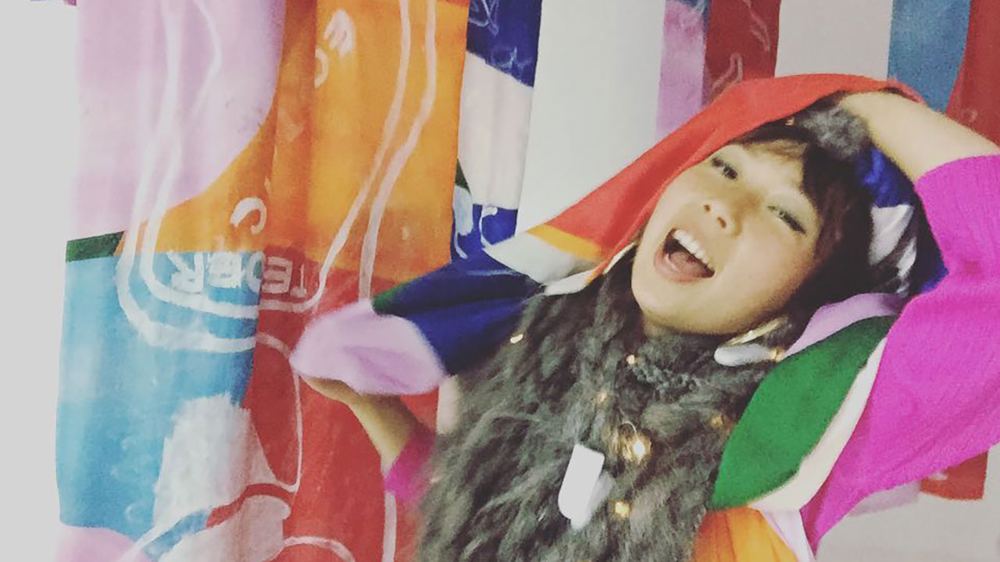

Pages tagged with: art
BA (Hons) Fine Art
Realise your artistic potential with a BA (Hons) Fine Art undergraduate degree with Plymouth University. Guided by practising artists, you’ll try different techniques and technologies, deepening your understanding of what makes great art.
Last updated: 3 June 2019
 ResM Art, Design and Architecture
ResM Art, Design and Architecture
The University of Plymouth's ResM Art, Design and Architecture offers a breadth of postgraduate research programmes that are distinct in their focus.
Last updated: 3 June 2019
 Illustration students at work in their studio
Illustration students at work in their studio
One year PGCE Secondary (Art and Design) programme. Bring your graduate expertise, skills and enthusiasm to the imaginative and practical teaching of art and design to children of all abilities from 11 to 18.
Last updated: 20 May 2019
BA (Hons) 3D Design
The award-winning BA 3D Design at the University of Plymouth explores all aspects of 3D design and offers three specialist pathways – product, furniture, ceramics and interiors – to help you towards a more desirable, safer and sustainable future.
Last updated: 16 May 2019